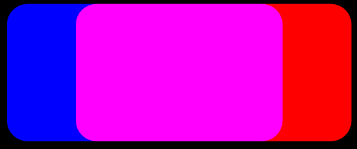

title: Arithmetic composite effect description: Use the arithmetic composite effect to combine 2 images using a weighted sum of pixels from the input images. ms.assetid: 6EC8CD61-5B51-4A8E-8A61-B291ABB5C5E0 keywords:
Use the arithmetic composite effect to combine 2 images using a weighted sum of pixels from the input images.
The CLSID for this effect is CLSID_D2D1ArithmeticComposite.
The formula here is used to compute this effect.
Outputrgba = C1 * Sourcergba * Destinationrgba + C2 * Sourcergba + C3 * Destinationrgba + C4
Where C1, C2, C3, C4 are coefficients that you set.
The coefficients map to the values in a D2D1_VECTOR_4F (x, y, z, w):
A simple example is to add the source and destination pixels. In the example, 2 rounded rectangles are composited together. The source rectangle is blue and the destination is red.
The image here is the output of the Arithmetic Composite effect with the coefficients of the equation set to the values here.

The result is that the pixel values for the source and destination are added. The regions where the rectangles don't overlap the RGBA values are all 0. Where the rectangles overlap the color is magenta because the R and B values are both at maximum.
Here's another example image with code.
| Before image 1 |
|---|
|
| Before image 2 |
|
| After |
ComPtr<ID2D1Effect> arithmeticCompositeEffect;
m_d2dContext->CreateEffect(CLSID_D2D1ArithmeticComposite, &arithmeticCompositeEffect);
arithmeticCompositeEffect->SetInput(0, bitmap);
arithmeticCompositeEffect->SetInput(1, bitmapTwo);
arithmeticCompositeEffect->SetValue(D2D1_ARITHMETICCOMPOSITE_PROP_COEFFICIENTS, D2D1::Vector4F(0.0f, 0.5f, 0.5f, 0.0f));
m_d2dContext->BeginDraw();
m_d2dContext->DrawImage(arithmeticCompositeEffect.Get());
m_d2dContext->EndDraw();
| Display name and index enumeration | Description |
|---|---|
| Coefficients D2D1_ARITHMETICCOMPOSITE_PROP_COEFFICIENTS | The coefficients for the equation used to composite the two input images. The coefficients are unitless and unbounded. Type is D2D1_VECTOR_4F. Default value is {1.0f, 0.0f, 0.0f, 0.0f}. |
| ClampOutput D2D1_ARITHMETICCOMPOSITE_PROP_CLAMP_OUTPUT | The effect clamps color values to between 0 and 1 before the effect passes the values to the next effect in the graph. If you set this to TRUE the effect will clamp the values. If you set this to FALSE, the effect will not clamp the color values, but other effects and the output surface may clamp the values if they are not of high enough precision. Type is BOOL. Default value is FALSE. |
The output bitmap depends on the coefficient values. These are the possible output bitmap sizes.
| Requirement | Value |
|---|---|
| Minimum supported client | Windows 8 and Platform Update for Windows 7 [desktop apps | Windows Store apps] |
| Minimum supported server | Windows 8 and Platform Update for Windows 7 [desktop apps | Windows Store apps] |
| Header | d2d1effects.h |
| Library | d2d1.lib, dxguid.lib |